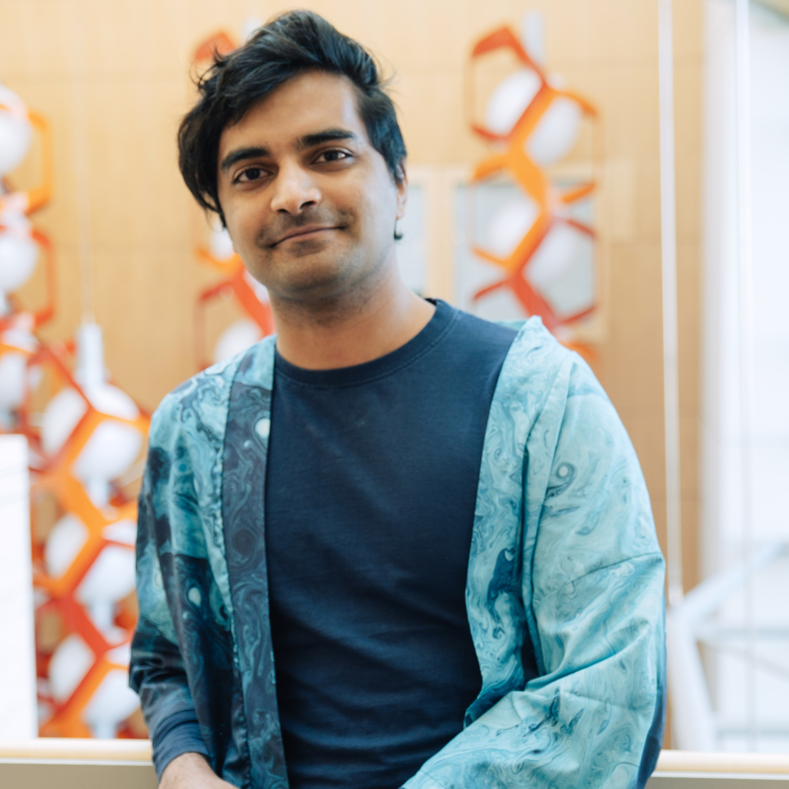

ucsf.edu
ucsf.edu
Education
2022-2025
Postdoctoral Fellow, Harvard University
2014-2021
Ph.D., Computational Biology and Bioinformatics
Duke University
Duke University
Research Interests
Active matter immunology
Publications
Cytokines control the physical state of immune tissue
bioRxiv. 2025.
Human fallopian tube-on-a-chip for preclinical testing of non-hormonal contraceptives with living human sperm
bioRxiv. 2026. doi: 10.64898/2026.01.22.700844.
Local collective memory from ratiometric signaling outperforms cellular gradient sensing limits
bioRxiv. 2025. doi: 10.1101/2025.04.18.649595.
Orientation of cell polarity by chemical gradients
Annual Review of Biophysics. 2022.
Chemotactic movement of a polarity site enables yeast cells to find their mates
Proc Natl Acad Sci USA. 2021.
Exploratory polarization facilitates mating partner selection in Saccharomyces cerevisiae
Molecular Biology of the Cell. 2021.
Mechanistic insights into actin-driven polarity site movement in yeast
Molecular Biology of the Cell. 2020.
Ratiometric GPCR signaling enables directional sensing in yeast
PLoS Biology. 2019.